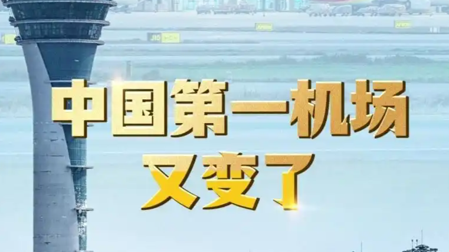

2026年前三季度，广州白云机场旅客吞吐量达6702.9万人次，同比增长9.7%，反超上海浦东机场的6658.4万人次，以微弱优势重回全国第一。两座超级枢纽的"第一之争"，又一次易主。
机场排名从来不只是数字的较量，它像一面镜子，照出背后城市的能级、腹地的活力与联通世界的密度。
排名会变，城市之间的暗涌不会停。
所以机场座次，是城市能级的一面镜子。
表层看，是几个百分点的增速差；但更深一层，是粤港澳大湾区枢纽地位的持续释放——国际航线恢复、商务与旅游客流回暖、白云所服务的珠三角腹地本身就拥有巨大的出行基本盘。
而浦东的客流结构更依赖国际中转与特定商务需求，在全球航线节奏波动时，增速会受到更复杂因素的影响。此消彼长之间，差距被拉到了毫厘。
反超靠的不是运气，是网络。
反超靠的不是运气，是枢纽网络的厚度。
从交通与区域经济视角看，机场是城市群的门户，更是临空经济的发动机——人流、物流、信息流在此交汇，带动周边产业与就业。京、沪、穗、成渝等枢纽的此消彼长，本质上是城市群竞争力的外显。
对城市而言，守住"第一"不如做强"网络"：航线密度、通关效率、地面接驳、产业协同，哪一项短板都可能让排名再次易主。
流动，本身就是活力。
第一易主不可怕，怕的是停在原地。
回到那组客流数字：6702.9万与6658.4万之间，差的不是名次，是城市向外连接的渴望。
机场的座次每年都可能改写，但背后那条逻辑始终不变——谁更能让人"方便地来、顺畅地去"，谁就握住了下一程的主动权。愿每一次起降，都载着一座城市的野心与平常人的远方；排名会变，向上的劲头不该变。